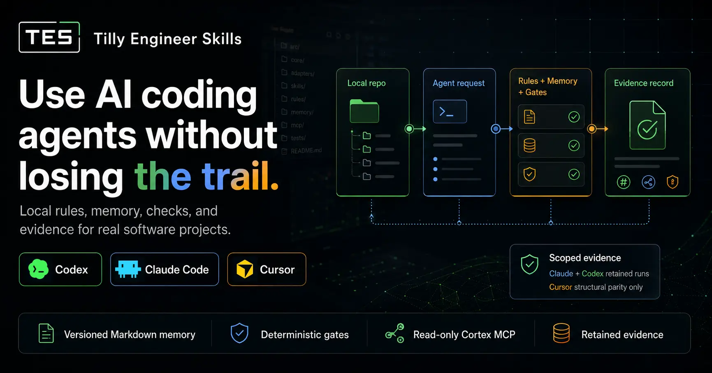

A service record for AI coding work
Your agent changed the repo. Can your team prove why?

TES turns AI coding sessions into inspectable local records: the rules used, context loaded, checks run, evidence kept, and rollback path stay inside the repository.
Do not buy the chat log
A transcript is not a dashboard, service history, inspection report, or recovery plan. If an agent changes a real repository, the team needs more than a confident answer.
The risk
The agent changes code and the reason disappears into a chat window.
The demand
A team needs to see which rules, context, checks, and limits governed the work.
The shift
TES keeps that operating record inside the repository instead of in memory or folklore.
What the system leaves behind
The pitch is simple because the machinery is local: every useful part of the run has somewhere inspectable to land.
Service record
Retained evidence, changed-file inventory, gate results, and rollback guidance.
Dashboard
Statuses such as PASS, BLOCKED, DEGRADED, NEEDS_REVIEW, and recovered context.
Memory
Versioned Markdown under docs/agents/**, with Cortex recall as a derived access path.
Mantra Gate
Before permitted state-changing work, [🍳 Flash-Fry] is the visible marker while full evidence stays recorded and bypass can be detected.
Safety lane
No default push, publish, remote mutation, marketplace action, or write-capable MCP.
Proof without theater
A good seller shows the inspection report. TES keeps claims narrow enough to be trusted and explicit enough to be checked.
- Retained v1 evidence shows up to 6x baseline disciplined behavior in scoped Claude CLI evals.
- Codex has scoped retained behavior evidence for the named run, backend, model, and instruction contract.
- Cursor is structural/contract parity only. Cursor behavior certification is not claimed.
- The repository currently keeps retained evidence reports under
docs/evidence/reports/**; the page avoids fixed report counts that drift.
GitHub npx quickstart
Installation is not the dream; it is the controlled path to the dream. Start with one GitHub package-spec command, then let the first agent session finish setup with evidence.
npx --loglevel=error -y --package github:murillodutt/tilly-engineer-skills#v0.3.136 tilly-engineer-skills addbunx --silent --bun --package github:murillodutt/tilly-engineer-skills#v0.3.136 tilly-engineer-skills addnpx --loglevel=error -y --package github:murillodutt/tilly-engineer-skills#v0.3.136 tilly-engineer-skills add --agent all --yes- Run from the target repository with Node.js 18+ and npx, or Bun 1.0+ and bunx. TES also requires Python 3.11+ for local setup oracles.
- Interactive mode lets you confirm target, agent hooks, and install mode before TES writes files.
- Use
--agent all --yeswhen you want all Codex, Claude Code, and Cursor hooks prepared non-interactively. - Codex: open Settings > Hooks, then Trust and enable the Session Start hook if it is marked needs review.
- Claude Code: open or reopen Claude Code, wait for the TES completion notice, then run
/tes-setup. - Cursor: reopen the workspace, let first-session setup complete, then run
/tes-setupfor the report. - After
/tes-setupreports complete, run/tes-align, then use/tes-mapfor the current GPS view before starting project work. - Read the final report before approving commit, push, or rollout.
#v0.3.136 is the intended fixed-ref form. Treat the remote ref as certified only after the tag or fixed ref is authorized and npm run release:check passes; the current evidence is local package-source and bundle closure.
--loglevel=error keeps package-runner warnings out of the first-run screen while preserving real command failures. For Bun-only machines, use the bunx --silent --bun command. If neither runtime is installed, install Node.js LTS or Bun before running TES.
When you want the keys
The landing makes the case. The manual gives the operating path: install, update, audit, report review, and rollback without blind file copying.
Try
Run the GitHub npx command from the target repository, open your agent, wait for the hook, run /tes-setup, run /tes-align, then use /tes-map for the current GPS view before project work.
Operate
Use the manual when you need routes, states, Mantra Gate, rollback, MCP, Field Reports, or Obsidian viewing.
Audit
Use the source map when a claim needs evidence, scope, or a governed document.
Canonical source map
The user manual is the top CTA. This map traces each public TES promise to the governed source that proves, scopes, or operates it.
Method
Why agent rules become measurable engineering behavior instead of rule folklore.
- Engineering principlesFour gates, evidence-converged context, and
E = A * S * C * V. - Mantra GatePre-action micro-gate:
[🍳 Flash-Fry]in compact mode, full evidence retained and adoption health checked. - Context mesh methodNarrative, instruction, execution, verification, and return layers.
- Adoption scorecardHow a copied rule becomes behavior, oracle, governance, and reentry stability.
Runtime surfaces
How Codex, Claude Code, and Cursor share one contract without pretending to be identical.
- Adapter capability matrixCertified surfaces, structural parity, and behavior scope by adapter.
- Platform differencesNative files, skills, rules, plugins, hooks, and MCP boundaries.
- Command triggersShared
/tes-*vocabulary, aliases, routers, and write behavior. - Agent manualAgent-side execution model, gates, return states, and rollback contract.
Install and safety
How TES enters a real repository through GitHub npx with local install records, first-session hooks, and rollback evidence.
- GitHub package-spec installationFixed-ref command form, first-session hooks, and deferred remote certification boundary.
- Command triggersPost-install
/tes-*vocabulary, aliases, routers, and write behavior. - Git safetyLocal baseline, backup, rollback, no push, no publish, and artifact hygiene.
- Local quality recipeStaged-file routing, local hooks, and
commit:checkas closure gate. - Public bundle manifestVersioned ZIP, source commit, SHA-256, and GitHub Pages distribution URLs.
Memory and feedback
How the trail survives beyond one chat window and returns as inspectable project context.
- Cortex continuityFilesystem-first Markdown memory; SQLite, MCP, and Obsidian are derived access surfaces.
- Read-only Cortex MCPProject-scoped recall and inspection without write-capable memory tools.
- CheckpointsTTL resumability state that cannot become durable Cortex memory or certification evidence.
- Field ReportsSanitized local operational feedback, optional GitHub drain, and quarantine rules.
Proof and boundaries
Where TES states what passed, what is scoped, and what must not be claimed.
- Eval and ablation methodFull, none, drop, distractor, raw evidence, and certification classes.
- Final certification reportClaude and Codex retained behavior scope, Cursor structural scope, and explicit non-claims.
- Parity gateHow cross-adapter parity is checked without manufacturing false symmetry.
Source governance
How the public page, machine map, and governed docs stay traceable.
- Docs indexHuman map of active docs, public surfaces, distribution artifacts, and source boundaries.
- TDS specDocument classes, evidence levels, source-of-truth rules, and validation contract.
- Machine-readable mapOptional public navigation map for tools and answer engines.
Un registro de servicio para trabajo con IA
Tu agente cambio el repo. Tu equipo puede probar por que?
TES convierte sesiones de agentes en registros locales inspeccionables: reglas usadas, contexto cargado, checks ejecutados, evidencia retenida y ruta de rollback quedan dentro del repositorio.
No compres el chat log
Una transcripcion no es panel, historial de servicio, inspeccion ni plan de recuperacion. Si un agente cambia un repositorio real, el equipo necesita mas que una respuesta confiada.
El riesgo
El agente cambia codigo y el motivo desaparece en una ventana de chat.
La exigencia
Un equipo necesita ver que reglas, contexto, checks y limites gobernaron el trabajo.
El cambio
TES conserva ese registro operativo dentro del repositorio, no en memoria ni folklore.
Lo que el sistema deja atras
La venta es simple porque la maquinaria es local: cada parte util de la ejecucion tiene un lugar inspeccionable donde quedar.
Registro de servicio
Evidencia retenida, inventario de archivos, resultados de gates y rollback.
Panel
Estados como PASS, BLOCKED, DEGRADED, NEEDS_REVIEW y contexto recuperado.
Memoria
Markdown versionado en docs/agents/**, con Cortex recall como acceso derivado.
Mantra Gate
Antes de trabajo autorizado que cambia estado, [🍳 Flash-Fry] es el marcador visible, retiene evidencia completa y permite detectar bypass.
Carril seguro
Sin push, publish, mutacion remota, marketplace o MCP con escritura por defecto.
Prueba sin teatro
Un buen vendedor muestra el reporte de inspeccion. TES mantiene claims estrechos para que puedan confiarse y revisarse.
- La evidencia v1 retenida muestra hasta 6x baseline disciplined behavior en evaluaciones Claude CLI acotadas.
- Codex tiene evidencia retenida acotada para el run, backend, modelo y contrato de instruccion nombrados.
- Cursor es solo paridad estructural/contractual. No se afirma certificacion de comportamiento de Cursor.
- El repositorio conserva reportes bajo
docs/evidence/reports/**; la pagina evita conteos fijos que se desactualizan.
Quickstart con GitHub npx
La instalacion no es el sueno; es el camino controlado hacia el sueno. Empieza con un comando GitHub package-spec y deja que la primera sesion del agente termine el setup con evidencia.
npx --loglevel=error -y --package github:murillodutt/tilly-engineer-skills#v0.3.136 tilly-engineer-skills addbunx --silent --bun --package github:murillodutt/tilly-engineer-skills#v0.3.136 tilly-engineer-skills addnpx --loglevel=error -y --package github:murillodutt/tilly-engineer-skills#v0.3.136 tilly-engineer-skills add --agent all --yes- Ejecuta desde el repositorio objetivo con Node.js 18+ y npx, o Bun 1.0+ y bunx. TES tambien requiere Python 3.11+ para los oraculos locales de setup.
- El modo interactivo te deja confirmar target, hooks de agentes y modo de instalacion antes de escribir archivos.
- Usa
--agent all --yescuando quieras preparar hooks para Codex, Claude Code y Cursor de forma no interactiva. - Codex: abre Settings > Hooks, luego usa Trust y activa el hook Session Start si aparece como needs review.
- Claude Code: abre o reabre Claude Code, espera el aviso de finalizacion de TES y ejecuta
/tes-setup. - Cursor: reabre el workspace, deja que el setup de primera sesion termine y ejecuta
/tes-setuppara el reporte. - Despues de que
/tes-setupreporte complete, ejecuta/tes-aligny usa/tes-mappara la vista GPS actual antes de empezar trabajo de proyecto. - Lee el reporte final antes de aprobar commit, push o rollout.
#v0.3.136 es la forma de ref fija prevista. Trata el ref remoto como certificado solo despues de autorizar el tag o ref fijo y de que npm run release:check pase; la evidencia actual es cierre local de package-source y bundle.
--loglevel=error mantiene los avisos del package runner fuera de la primera pantalla sin ocultar fallas reales del comando. En maquinas solo con Bun, usa bunx --silent --bun. Si no hay runtime instalado, instala Node.js LTS o Bun antes de ejecutar TES.
Cuando quieres las llaves
La landing convence. El manual da la ruta operativa: instalacion, update, auditoria, revision de reportes y rollback sin copia ciega.
Probar
Ejecuta el comando GitHub npx desde el repositorio objetivo, abre tu agente, espera el hook, ejecuta /tes-setup, luego /tes-align y usa /tes-map para la vista GPS actual antes del trabajo de proyecto.
Operar
Usa el manual para rutas, estados, Mantra Gate, rollback, MCP, Field Reports u Obsidian.
Auditar
Usa el mapa de fuentes cuando un claim necesita evidencia, alcance o documento gobernado.
Mapa de fuentes canonicas
El manual de usuario ya es el CTA principal. Este mapa conecta cada promesa publica de TES con la fuente gobernada que la prueba, delimita u opera.
Metodo
Por que las reglas de agentes se vuelven comportamiento medible, no folklore de reglas.
- Principios de ingenieriaCuatro gates, contexto convergido por evidencia y
E = A * S * C * V. - Mantra GateMicro-gate previo a la accion:
[🍳 Flash-Fry]en modo compacto, evidencia completa retenida y salud de adopcion verificada. - Metodo context meshCapas de narrativa, instruccion, ejecucion, verificacion y retorno.
- Scorecard de adopcionComo una regla copiada se vuelve comportamiento, oraculo, gobernanza y reentrada estable.
Superficies runtime
Como Codex, Claude Code y Cursor comparten un contrato sin fingir que son identicos.
- Matriz de capacidades de adaptersSuperficies certificadas, paridad estructural y alcance de comportamiento por adapter.
- Diferencias de plataformaArchivos nativos, skills, rules, plugins, hooks y limites MCP.
- Gatillos de comandoVocabulario
/tes-*, aliases, routers y comportamiento de escritura. - Manual del agenteModelo de ejecucion del agente, gates, estados de retorno y contrato de rollback.
Instalacion y seguridad
Como TES entra en un repositorio real por npx desde GitHub con registro local de instalacion, hooks de primera sesion y evidencia de rollback.
- Instalacion GitHub package-specForma de comando con ref fija, hooks de primera sesion y limite de certificacion remota diferida.
- Gatillos de comandoVocabulario post-install
/tes-*, aliases, routers y comportamiento de escritura. - Seguridad GitBaseline local, backup, rollback, sin push, sin publish e higiene de artefactos.
- Receta de calidad localRuteo por staged files, hooks locales y
commit:checkcomo gate de cierre. - Manifest del bundle publicoZIP versionado, source commit, SHA-256 y URLs de distribucion GitHub Pages.
Memoria y feedback
Como el rastro sobrevive a una ventana de chat y vuelve como contexto inspeccionable.
- Continuidad CortexMemoria Markdown filesystem-first; SQLite, MCP y Obsidian son superficies derivadas.
- Cortex MCP read-onlyRecall e inspeccion con escopo de proyecto, sin herramientas de escritura de memoria.
- CheckpointsEstado TTL de resumibilidad que no puede convertirse en memoria Cortex durable ni evidencia de certificacion.
- Field ReportsFeedback operacional local sanitizado, drain GitHub opcional y reglas de cuarentena.
Prueba y limites
Donde TES declara que paso, que es escopado y que no debe afirmarse.
- Metodo de eval y ablationFull, none, drop, distractor, evidencia raw y clases de certificacion.
- Reporte final de certificacionAlcance de comportamiento Claude y Codex, alcance estructural Cursor y non-claims explicitos.
- Gate de paridadComo se revisa paridad cross-adapter sin fabricar falsa simetria.
Gobernanza de fuente
Como la pagina publica, el mapa machine-readable y los docs gobernados permanecen trazables.
- Indice de docsMapa humano de docs activos, superficies publicas, artefactos de distribucion y limites de fuente.
- Spec TDSClases documentales, niveles de evidencia, reglas source-of-truth y contrato de validacion.
- Mapa machine-readableMapa publico opcional para herramientas y answer engines.
Um registro de servico para trabalho de IA
Seu agente alterou o repo. Sua equipe consegue provar por que?
TES transforma sessoes de agentes em registros locais inspecionaveis: regras usadas, contexto carregado, checks executados, evidencia retida e rota de rollback ficam dentro do repositorio.
Nao compre o chat log
Uma transcricao nao e painel, historico de servico, inspecao nem plano de recuperacao. Se um agente altera um repositorio real, a equipe precisa de mais que uma resposta confiante.
O risco
O agente muda codigo e o motivo desaparece em uma janela de chat.
A exigencia
A equipe precisa ver quais regras, contexto, checks e limites governaram o trabalho.
A virada
TES preserva esse registro operacional dentro do repositorio, nao na memoria nem no folklore.
O que o sistema deixa para tras
A venda e simples porque a mecanica e local: cada parte util da execucao tem um lugar inspecionavel para ficar.
Registro de servico
Evidencia retida, inventario de arquivos alterados, resultado dos gates e rollback.
Painel
Estados como PASS, BLOCKED, DEGRADED, NEEDS_REVIEW e contexto recuperado.
Memoria
Markdown versionado em docs/agents/**, com Cortex recall como acesso derivado.
Mantra Gate
Antes de trabalho permitido que muda estado, [🍳 Flash-Fry] é o marcador visível, retém evidencia completa e detecta bypass.
Faixa segura
Sem push, publish, mutacao remota, marketplace ou MCP com escrita por padrao.
Prova sem teatro
Um bom vendedor mostra o relatorio de inspecao. TES mantem claims estreitos o bastante para serem confiaveis e verificaveis.
- A evidencia v1 retida mostra ate 6x baseline disciplined behavior em evals Claude CLI escopados.
- Codex tem evidencia comportamental retida e escopada para o run, backend, modelo e contrato de instrucao nomeados.
- Cursor e apenas paridade estrutural/contratual. Certificacao de comportamento do Cursor nao e afirmada.
- O repositorio mantem relatorios retidos em
docs/evidence/reports/**; a pagina evita contagens fixas que derivam.
Quickstart com GitHub npx
Instalacao nao e o sonho; e o caminho controlado ate o sonho. Comece com um comando GitHub package-spec e deixe a primeira sessao do agente terminar o setup com evidencia.
npx --loglevel=error -y --package github:murillodutt/tilly-engineer-skills#v0.3.136 tilly-engineer-skills addbunx --silent --bun --package github:murillodutt/tilly-engineer-skills#v0.3.136 tilly-engineer-skills addnpx --loglevel=error -y --package github:murillodutt/tilly-engineer-skills#v0.3.136 tilly-engineer-skills add --agent all --yes- Rode a partir do repositorio alvo com Node.js 18+ e npx, ou Bun 1.0+ e bunx. O TES tambem exige Python 3.11+ para os oraculos locais de setup.
- O modo interativo deixa confirmar target, hooks de agentes e modo de instalacao antes de escrever arquivos.
- Use
--agent all --yesquando quiser preparar hooks para Codex, Claude Code e Cursor de forma nao interativa. - Codex: abra Settings > Hooks, depois use Trust e ative o hook Session Start se ele aparecer como needs review.
- Claude Code: abra ou reabra o Claude Code, aguarde o aviso de conclusao do TES e rode
/tes-setup. - Cursor: reabra o workspace, deixe o setup de primeira sessao terminar e rode
/tes-setuppara o relatorio. - Depois que
/tes-setupreportar complete, rode/tes-aligne use/tes-mappara a visao GPS atual antes de iniciar trabalho no projeto. - Leia o relatorio final antes de aprovar commit, push ou rollout.
#v0.3.136 e a forma de ref fixa prevista. Trate o ref remoto como certificado somente depois de autorizar a tag ou ref fixo e de npm run release:check passar; a evidencia atual e fechamento local de package-source e bundle.
--loglevel=error mantem avisos do package runner fora da primeira tela sem esconder falhas reais do comando. Em maquinas somente com Bun, use bunx --silent --bun. Se nenhum runtime estiver instalado, instale Node.js LTS ou Bun antes de executar o TES.
Quando voce quer as chaves
A landing convence. O manual entrega o caminho operacional: instalacao, update, auditoria, revisao de relatorios e rollback sem copia cega.
Testar
Rode o comando GitHub npx a partir do repositorio alvo, abra seu agente, aguarde o hook, rode /tes-setup, depois /tes-align e use /tes-map para a visao GPS atual antes do trabalho no projeto.
Operar
Use o manual para rotas, estados, Mantra Gate, rollback, MCP, Field Reports ou Obsidian.
Auditar
Use o mapa de fontes quando um claim precisar de evidencia, escopo ou documento governado.
Mapa de fontes canonicas
O manual do usuario ja e o CTA principal. Este mapa liga cada promessa publica de TES a fonte governada que prova, delimita ou opera aquela promessa.
Metodo
Por que regras de agentes viram comportamento de engenharia mensuravel, nao folklore de regras.
- Principios de engenhariaQuatro gates, contexto convergido por evidencia e
E = A * S * C * V. - Mantra GateMicro-gate antes da acao:
[🍳 Flash-Fry]no modo compacto, evidencia completa retida e saude de adocao verificada. - Metodo context meshCamadas de narrativa, instrucao, execucao, verificacao e retorno.
- Scorecard de adocaoComo uma regra copiada vira comportamento, oraculo, governanca e reentrada estavel.
Superficies runtime
Como Codex, Claude Code e Cursor compartilham um contrato sem fingir que sao identicos.
- Matriz de capacidades dos adaptersSuperficies certificadas, paridade estrutural e escopo comportamental por adapter.
- Diferencas de plataformaArquivos nativos, skills, rules, plugins, hooks e limites MCP.
- Gatilhos de comandoVocabulario
/tes-*, aliases, routers e comportamento de escrita. - Manual do agenteModelo de execucao do agente, gates, estados de retorno e contrato de rollback.
Instalacao e seguranca
Como TES entra em um repositorio real por npx direto do GitHub com registro local de instalacao, hooks de primeira sessao e evidencia de rollback.
- Instalacao GitHub package-specForma de comando com ref fixa, hooks de primeira sessao e limite de certificacao remota deferida.
- Gatilhos de comandoVocabulario post-install
/tes-*, aliases, routers e comportamento de escrita. - Seguranca GitBaseline local, backup, rollback, sem push, sem publish e higiene de artefatos.
- Receita de qualidade localRoteamento por staged files, hooks locais e
commit:checkcomo gate de fechamento. - Manifest do bundle publicoZIP versionado, source commit, SHA-256 e URLs de distribuicao GitHub Pages.
Memoria e feedback
Como o rastro sobrevive a uma janela de chat e retorna como contexto inspecionavel.
- Continuidade CortexMemoria Markdown filesystem-first; SQLite, MCP e Obsidian sao superficies derivadas.
- Cortex MCP read-onlyRecall e inspecao com escopo de projeto, sem ferramentas de escrita de memoria.
- CheckpointsEstado TTL de retomada que nao pode virar memoria Cortex duravel nem evidencia de certificacao.
- Field ReportsFeedback operacional local sanitizado, drain GitHub opcional e regras de quarentena.
Prova e limites
Onde TES declara o que passou, o que e escopado e o que nao deve ser afirmado.
- Metodo de eval e ablationFull, none, drop, distractor, evidencia raw e classes de certificacao.
- Relatorio final de certificacaoEscopo comportamental Claude e Codex, escopo estrutural Cursor e non-claims explicitos.
- Gate de paridadeComo a paridade cross-adapter e verificada sem fabricar falsa simetria.
Governanca de fonte
Como a pagina publica, o mapa machine-readable e os docs governados seguem rastreaveis.
- Indice de docsMapa humano de docs ativos, superficies publicas, artefatos de distribuicao e limites de fonte.
- Spec TDSClasses documentais, niveis de evidencia, regras source-of-truth e contrato de validacao.
- Mapa machine-readableMapa publico opcional para ferramentas e answer engines.